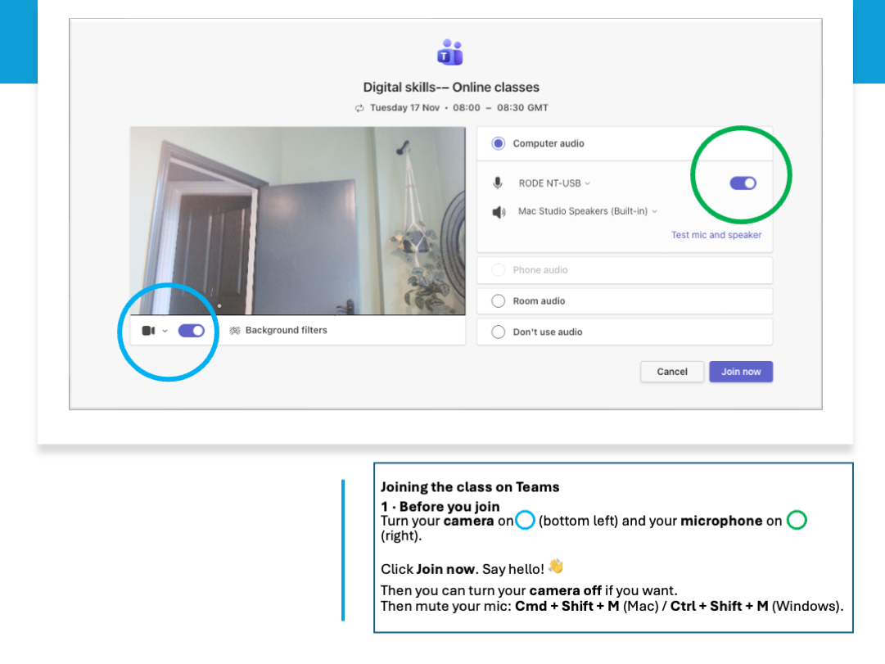
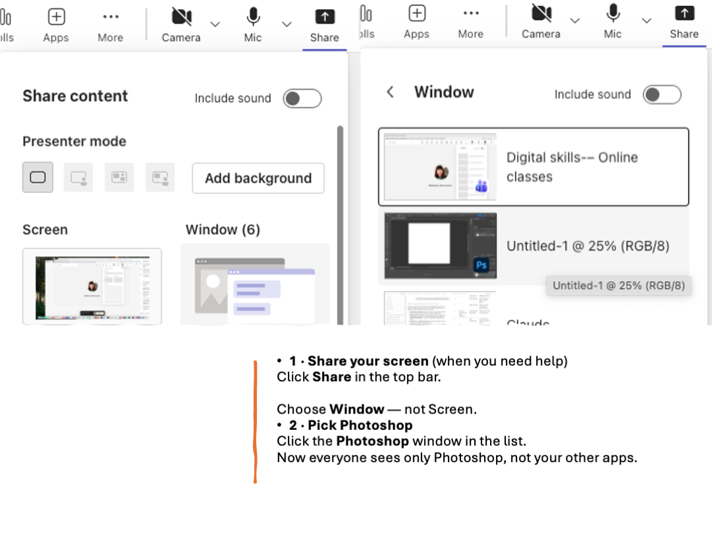
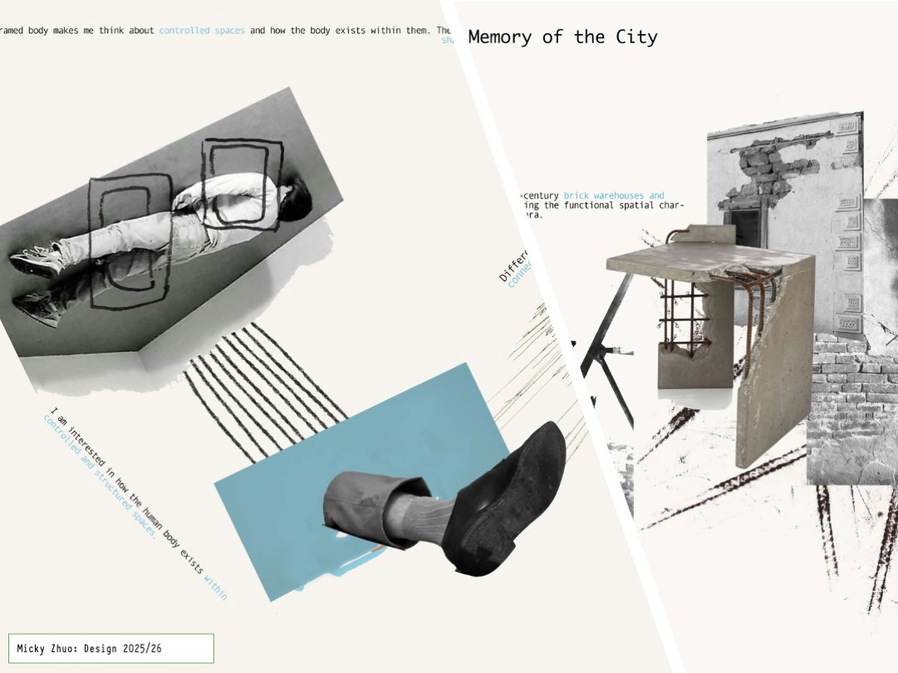
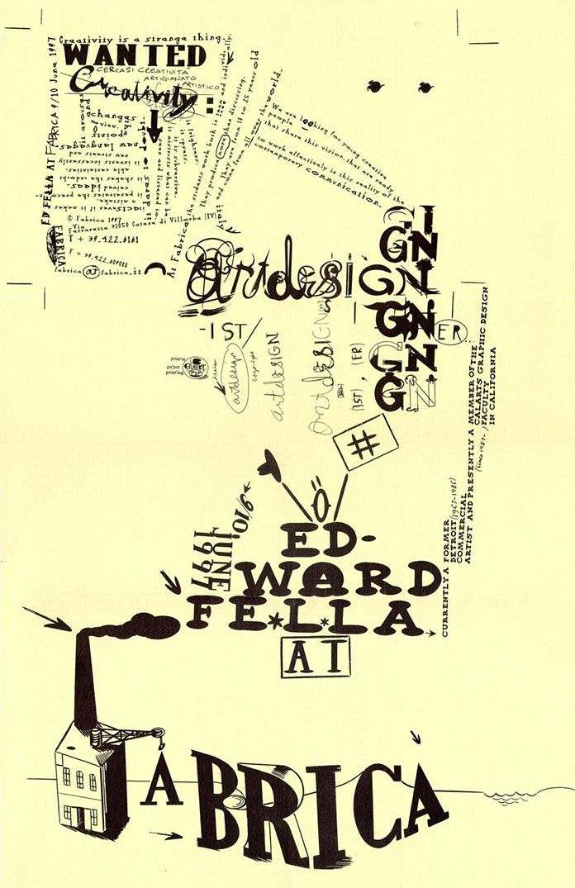
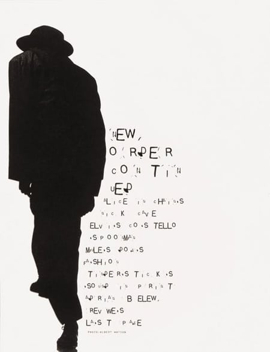

In this session you will learn three techniques for creating graphic elements in Photoshop. These marks do real work on the page — connecting images, guiding the reader's eye, and giving your page a visual voice.


Share the window, not your whole screen — then nobody sees your other apps.
Place repeated characters along a curved or straight path. The shape becomes part of the meaning.
Use repeated keyboard characters as visual texture. Slashes, tildes, asterisks — each carries its own energy.
Turn any character into a brush and paint it along a path. Repeating symbols create rhythm and pattern.
Look at how these techniques create pages that have a visual identity — marks that feel like the research theme itself:

Place repeated characters along a curved path to create marks that feel like movement, flow, or structure. The path shape itself carries meaning.

Select the Pen Tool (P). Click and drag to make a curved line. You are drawing a path, not a shape.
Think about what character fits your theme. Try: ~ ~ ~ for flow, / / / for energy, * * * for texture.
Select the Type Tool (T). Hover over your path — the cursor changes. Click on the path and type your characters.
Change the font size to make marks larger or smaller. Adjust tracking in the Character panel to space them out.
Go to Type → Convert to Shape. This lets you distort and transform the marks further using Free Transform.
Live preview — two characters on different paths
Use repeated keyboard characters as visual texture and marks. Different characters carry different energy — choose ones that feel like your research theme.

Draw with keyboard characters on the canvas below — hold and drag to paint marks:
Select Type Tool (T). Choose a monospaced font like Courier New or Space Mono.
Type a long string: /////// or ~~~~~~~ or * * * * *. Font size 48pt or bigger.
Use Free Transform (Cmd/Ctrl + T). Rotate, skew, or stretch the text.
Duplicate the layer, change the colour, rotate slightly differently. Overlapping layers create depth.
Turn any character into a custom brush and paint it along a path. Repeating symbols create rhythm, pattern, and visual texture.
Use the Type Tool (T) to type a single character. Make it large — 60pt or bigger. This becomes your brush shape.
Go to Edit → Define Brush Preset. Give it a name. Your character is now a brush you can paint with.
Open the Brush Settings panel (F5). Increase Spacing to 100–200% so each symbol is separate and readable.
Draw a path with the Pen Tool. Right-click the path → Stroke Path → select your brush.
In Brush Settings, enable Shape Dynamics and increase Size Jitter to vary symbol size as it paints.
★ ✦ → ◆ ✕ ○ ▲ — each creates a very different visual rhythm. Choose one that responds to your research theme.
Review your work using the checklist, complete your progress report, then upload to Padlet.
📋 Complete Your Progress Report
Upload a before and after image, rate your confidence, and answer the four reflection questions. Download as PDF to upload to Padlet.
📝 Open Progress Documentation Tool →